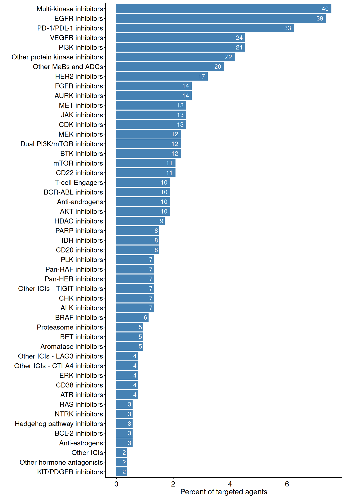
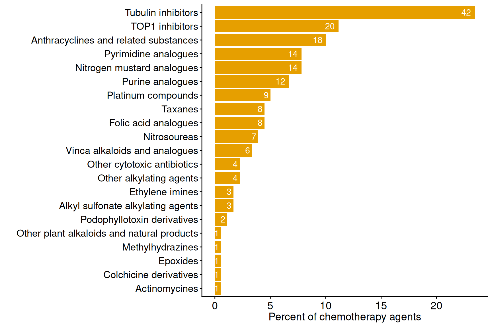

if (!("remotes" %in% installed.packages())) {
install.packages("remotes")
}
remotes::install_github('sigven/pharmOncoX')Installation
Cancer drug classifications
Targeted agents
Plotted below are key statistics with respect to drug classification numbers for targeted and chemotherapy agents found in pharmOncoX. Existing drug classifications have been retrieved from ATC, and these have been extended with manual addition/curation, and also through the establishment of multiple novel levels in the ATC tree, particularly for targeted therapies. Note that only drugs that are indicated for cancer conditions (as harvested from the Open Targets platform) are considered in the numbers plotted below.

Chemotherapy agents

Retrieval of drugs - examples
Get BRAF-targeted drugs, list records per indication
drugs <- get_drugs(
cache_dir = cache_dir,
treatment_category = c("targeted_therapy_classified",
"targeted_therapy_unclassified"),
drug_target = c('BRAF'))
## Number of drug records
nrow(drugs$records)
#> [1] 278
## Column names of drug records
colnames(drugs$records)
#> [1] "drug_id" "drug_name"
#> [3] "drug_type" "molecule_chembl_id"
#> [5] "drug_action_type" "drug_alias"
#> [7] "nci_concept_definition" "opentargets"
#> [9] "drug_cancer_relevance" "inhibition_moa"
#> [11] "is_adc" "nci_t"
#> [13] "target_symbol" "target_entrezgene"
#> [15] "target_genename" "target_ensembl_gene_id"
#> [17] "target_type" "drug_approved_indication"
#> [19] "disease_efo_id" "disease_efo_label"
#> [21] "primary_site" "drug_max_clinical_stage_indication"
#> [23] "drug_max_clinical_stage" "drug_n_indications"
#> [25] "drug_approved_noncancer" "drug_frac_cancer_indications"
#> [27] "drug_clinical_id" "drug_clinical_source"
#> [29] "atc_code_level1" "atc_level1"
#> [31] "atc_code_level2" "atc_level2"
#> [33] "atc_code_level3" "atc_level3"
#> [35] "atc_treatment_category"Get RAS-targeted drugs, list per drug target
drugs_ras <- get_drugs(
cache_dir = cache_dir,
treatment_category = c("targeted_therapy_classified"),
drug_action_inhibition = TRUE,
output_resolution = "drug2target")$records |>
dplyr::filter(atc_level3 == "RAS inhibitors") |>
dplyr::select(
-c("drug_alias", "disease_main_group", "drug_clinical_id")) |>
dplyr::mutate(
disease_indication = stringr::str_replace_all(
disease_indication, "\\|", ", ")) |>
dplyr::select(
drug_id, drug_name, drug_type, molecule_chembl_id,
drug_action_type, target_symbol, dplyr::everything())Get MEK inhibitors, list per drug only
drugs_mek <- get_drugs(
cache_dir = cache_dir,
treatment_category = c("targeted_therapy_classified"),
drug_action_inhibition = TRUE,
drug_source_opentargets = TRUE,
output_resolution = "drug")$records |>
dplyr::filter(atc_level3 == "MEK inhibitors") |>
dplyr::select(
-c("drug_alias", "disease_main_group", "drug_clinical_id")) |>
dplyr::mutate(
disease_indication = stringr::str_replace_all(
disease_indication, "\\|", ", "))Get immune checkpoint inhibitors, list per drug target
drugs_ici <- get_drugs(
cache_dir = cache_dir,
treatment_category = c("targeted_therapy_classified"),
drug_source_opentargets = FALSE,
drug_classified_cancer = TRUE,
output_resolution = "drug2target")$records |>
dplyr::filter(
!is.na(atc_level3) &
atc_level3 %in% c("PD-1/PDL-1 inhibitors",
"Other ICIs - LAG3 inhibitors",
"Other ICIs - TIGIT inhibitors",
"Other ICIs - CTLA4 inhibitors",
"Other ICIs")) |>
dplyr::select(
-c("drug_alias", "disease_main_group", "drug_clinical_id")) |>
dplyr::mutate(
disease_indication = stringr::str_replace_all(
disease_indication, "\\|", ", ")) |>
dplyr::select(
drug_id, drug_name, drug_type,
target_symbol, target_genename,
dplyr::everything())Get immune checkpoint inhibitors indicated for lung cancer, list per drug-target entry
drugs_ici_lung <- get_drugs(
cache_dir = cache_dir,
output_resolution = "drug2target",
treatment_category = c("targeted_therapy_classified"),
drug_source_opentargets = TRUE,
drug_indication_main = "Lung")$records |>
dplyr::filter(
!is.na(atc_level3) &
atc_level3 %in% c("PD-1/PDL-1 inhibitors",
"Other ICIs - LAG3 inhibitors",
"Other ICIs - TIGIT inhibitors",
"Other ICIs - CTLA4 inhibitors",
"Other ICIs")) |>
dplyr::select(
-c("drug_alias", "disease_main_group", "drug_clinical_id")) |>
dplyr::mutate(
disease_indication = stringr::str_replace_all(
disease_indication, "\\|", ", ")) |>
dplyr::select(
drug_id, drug_name, drug_type,
target_symbol, target_genename,
dplyr::everything())Get antimetabolite drugs
drugs_antimetab <- get_drugs(
cache_dir = cache_dir,
treatment_category = c("chemo_therapy_classified"),
output_resolution = "drug")$records |>
dplyr::filter(
!is.na(atc_level2) &
stringr::str_detect(atc_level2, "ANTIMETABOLITES")) |>
dplyr::select(
-c("drug_alias", "disease_main_group", "drug_clinical_id")) |>
dplyr::mutate(
disease_indication = stringr::str_replace_all(
disease_indication, "\\|", ", "))Get taxanes
drugs_taxanes <- get_drugs(
cache_dir = cache_dir,
treatment_category = "chemo_therapy_classified",
output_resolution = "drug")$records |>
dplyr::filter(
stringr::str_detect(atc_level3, "Taxanes")) |>
dplyr::select(
-c("drug_alias", "disease_main_group", "drug_clinical_id")) |>
dplyr::mutate(
disease_indication = stringr::str_replace_all(
disease_indication, "\\|", ", "))Get platinum compounds
drugs_platins <- get_drugs(
cache_dir = cache_dir,
treatment_category = "chemo_therapy_classified",
output_resolution = "drug")$records |>
dplyr::filter(
stringr::str_detect(atc_level3, "Platinum compounds")) |>
dplyr::select(
-c("drug_alias", "disease_main_group", "drug_clinical_id")) |>
dplyr::mutate(
disease_indication = stringr::str_replace_all(
disease_indication, "\\|", ", ")) |>
dplyr::select(
drug_id, drug_name, drug_type, molecule_chembl_id,
drug_action_type, opentargets, dplyr::everything())Retrieval of biomarkers
Reported associations between BRCA1/2 alterations and drug sensitivity
- Get evidence from CIViC and CGI for cancer drug sensitivity of BRCA1/2 alterations (somatically (tumor) or inherited/germline)
biomarkers <- get_biomarkers(cache_dir = cache_dir)
brca1_biomarkers <- list()
for (source in c('civic', 'cgi')) {
brca1_biomarkers[[source]] <-
biomarkers$data[[source]]$variant |>
dplyr::filter(!is.na(symbol) & symbol %in% c("BRCA1", "BRCA2")) |>
dplyr::group_by(variant_id, variant_name_primary, variant_consequence) |>
dplyr::summarise(
variant_alias = paste(variant_alias, collapse = ", "),
.groups = "drop") |>
dplyr::inner_join(
biomarkers$data[[source]]$clinical, by = "variant_id") |>
dplyr::select(
variant_id, variant_name_primary, therapeutic_context,
evidence_type, evidence_level,
biomarker_source, biomarker_source_datestamp,
molecular_profile_name, evidence_id, variant_origin,
primary_site, evidence_id, source_id,
evidence_url, evidence_description, clinical_significance) |>
dplyr::distinct() |>
dplyr::rename(
literature_id = source_id,
variant_name = variant_name_primary) |>
dplyr::filter(evidence_type == "Predictive") |>
dplyr::select(
variant_name, primary_site, therapeutic_context,
molecular_profile_name, evidence_level,
dplyr::everything())
}
brca1_biomarkers_all <-
dplyr::bind_rows(
brca1_biomarkers[['civic']],
brca1_biomarkers[['cgi']]) |>
dplyr::arrange(evidence_level)Session Info
sessionInfo()
#> R version 4.6.0 (2026-04-24)
#> Platform: x86_64-pc-linux-gnu
#> Running under: Ubuntu 24.04.4 LTS
#>
#> Matrix products: default
#> BLAS: /usr/lib/x86_64-linux-gnu/openblas-pthread/libblas.so.3
#> LAPACK: /usr/lib/x86_64-linux-gnu/openblas-pthread/libopenblasp-r0.3.26.so; LAPACK version 3.12.0
#>
#> locale:
#> [1] LC_CTYPE=C.UTF-8 LC_NUMERIC=C LC_TIME=C.UTF-8
#> [4] LC_COLLATE=C.UTF-8 LC_MONETARY=C.UTF-8 LC_MESSAGES=C.UTF-8
#> [7] LC_PAPER=C.UTF-8 LC_NAME=C LC_ADDRESS=C
#> [10] LC_TELEPHONE=C LC_MEASUREMENT=C.UTF-8 LC_IDENTIFICATION=C
#>
#> time zone: UTC
#> tzcode source: system (glibc)
#>
#> attached base packages:
#> [1] stats graphics grDevices utils datasets methods base
#>
#> other attached packages:
#> [1] pharmOncoX_2.3.0
#>
#> loaded via a namespace (and not attached):
#> [1] gtable_0.3.6 jsonlite_2.0.0 dplyr_1.2.1 compiler_4.6.0
#> [5] crayon_1.5.3 tidyselect_1.2.1 stringr_1.6.0 assertthat_0.2.1
#> [9] scales_1.4.0 yaml_2.3.12 fastmap_1.2.0 ggplot2_4.0.3
#> [13] R6_2.6.1 generics_0.1.4 curl_7.1.0 knitr_1.51
#> [17] htmlwidgets_1.6.4 tibble_3.3.1 reactable_0.4.5 RColorBrewer_1.1-3
#> [21] pillar_1.11.1 rlang_1.2.0 stringi_1.8.7 reactR_0.6.1
#> [25] lgr_0.5.2 xfun_0.57 S7_0.2.2 fs_2.1.0
#> [29] otel_0.2.0 cli_3.6.6 withr_3.0.2 magrittr_2.0.5
#> [33] crosstalk_1.2.2 grid_4.6.0 digest_0.6.39 lifecycle_1.0.5
#> [37] vctrs_0.7.3 evaluate_1.0.5 gargle_1.6.1 glue_1.8.1
#> [41] farver_2.1.2 googledrive_2.1.2 rmarkdown_2.31 purrr_1.2.2
#> [45] httr_1.4.8 tools_4.6.0 pkgconfig_2.0.3 htmltools_0.5.9References
Griffith, Malachi, Nicholas C Spies, Kilannin Krysiak, et al. 2017. “CIViC Is a Community Knowledgebase for Expert Crowdsourcing the Clinical Interpretation of Variants in Cancer.” Nat. Genet. 49 (2): 170–74. http://dx.doi.org/10.1038/ng.3774.
Kim, Sunghwan, Jie Chen, Tiejun Cheng, et al. 2021. “PubChem in 2021: New Data Content and Improved Web Interfaces.” Nucleic Acids Res. 49 (D1): D1388–95. http://dx.doi.org/10.1093/nar/gkaa971.
Nakken, Sigve. 2023. phenOncoX: A Phenotype Ontology Map for Cancer. https://github.com/sigven/phenOncoX.
Ochoa, David, Andrew Hercules, Miguel Carmona, et al. 2021. “Open Targets Platform: Supporting Systematic Drug-Target Identification and Prioritisation.” Nucleic Acids Res. 49 (D1): D1302–10. http://dx.doi.org/10.1093/nar/gkaa1027.
Sioutos, Nicholas, Sherri de Coronado, Margaret W Haber, Frank W Hartel, Wen-Ling Shaiu, and Lawrence W Wright. 2007. “NCI Thesaurus: A Semantic Model Integrating Cancer-Related Clinical and Molecular Information.” J. Biomed. Inform. 40 (1): 30–43. http://dx.doi.org/10.1016/j.jbi.2006.02.013.
Tamborero, David, Carlota Rubio-Perez, Jordi Deu-Pons, et al. 2018. “Cancer Genome Interpreter Annotates the Biological and Clinical Relevance of Tumor Alterations.” Genome Med. 10 (1): 25. http://dx.doi.org/10.1186/s13073-018-0531-8.